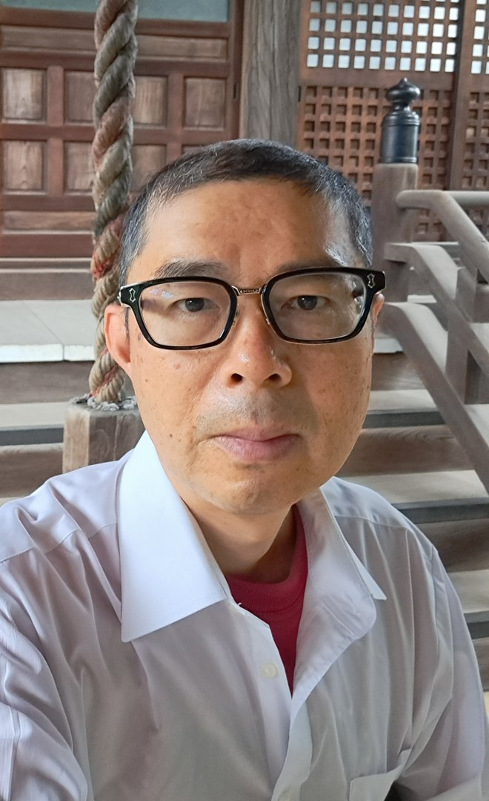

Человек может обрести уверенность и самостоятельность.
Опираясь на мудрость и окружение, он может сам управлять своей жизнью.

Ичиро Асанума | Эксперт по качеству, содействующий формированию индивидуальности
- Находить и создавать силу упорства, силу осознания и силу радости
- Пробуждение осознанности и создание импульсов для личностного роста
За плечами работа инженера: предложения по системам, проектирование, разработка и тестирование. Наблюдения за обществом в Японии и за рубежом воплощены в фотовыставках и книгах. Более 15 лет опыта в качестве специалиста по качеству ИТ и компьютеризированных систем в фармацевтической отрасли, где ключевое значение имеет подотчётность.
- МИССИЯ
- Содействие созданию общества, наполненного людьми, которые уверенно идут по жизни, невзирая на любые тревоги и сомнения.
- ВИДЕНИЕ
- Распространение мудрости, пробуждение осознанности и создание импульсов для непрерывного роста.
МЕНЮ УСЛУГ
Распространение знаний и мудрости
Издательская деятельность, предоставление обучающих данных для ИИ, обмен рабочими шаблонами и платформами
Поддержка построения и укрепления систем управления (governance)
Применение методов управления качеством ИТ фармацевтической отрасли в обществе ИИ и данных, где требуется подотчётность; поддержка ИТ-аудита, оценки СМК и управления проектами.
Содействие взаимопониманию между людьми
Знакомство с российской культурой, информационные исследования, перевод с японского на русский и с русского на японский, социальный анализ на основе интервью и опросов и представление его результатов.
ДОСТИЖЕНИЯ
НАГРАДЫ И ВЫСТАВКИ
- 2026 Фотоэссе «Walking along the ancient Tokaido Road — A Pilgrim's Path: Adventures and Transformations (The Complete Trilogy Vol. 1-3)» — Финалист премии American Book Fest / 2026 International Book Awards (в категориях «Nonfiction: Cross-Genre» и «Travel: Guides & Essays»)
- 2012 Фотовыставка «Близкая и далекая Центральная Азия: земля и люди Кыргызстана» — Избранная экспозиция галереи epsite Spotlight
СЕРТИФИКАТЫ И КВАЛИФИКАЦИИ
- 2025–2026 Получение сертификаций ISACA: CGEIT и CISA (2025 г.) / AAIA (2026 г.)
- 2025 Получение квалификации аудитора IRCA QMS 2015 / ассоциированного аудитора СМИБ (ISMS)
- 2018 JDLA Deep Learning for GENERAL 2018 #1
- 2016–2017 Государственный квалификационный экзамен специалистов по ИТ (IPA): экзамены «ИТ-стратег» и «Управление информационной безопасностью»
ОРГАНИЗАЦИЯ / КОНТАКТЫ
Ичиро Асанумаcontact@asanumaichiro.com
Содействие созданию общества, наполненного людьми, которые уверенно идут по жизни, невзирая на любые тревоги и сомнения.